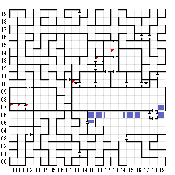

【 x：0，y：7 】
彫像の前に辿り着いた
＊＊は品物を渡した
？SPHRE CRYSTAL
（ORB of EARITHIN）
【 x：1，y：7 】
目の前に
【 x：2，y：7 】
カードは何
DEATH
【 x：8，y：10 】
4Fから
【 x：11，y：13 】
さらばだ、汝の道程の易からんことを！
【 x：13，y：14 】
ル・ケブレス
なにをしても打ち消されてしまう
NEUTRAL CRYSTALを持っていると通れる。
（GOODとEVILのCRYSTALをスペシャルパワーで合成する
中立のキャラでやると消えるだけで体力も減らされる）